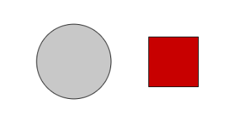
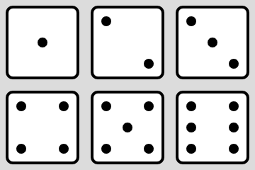
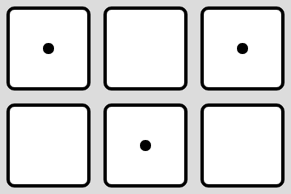

The state of a program is determined by the 'current' values in its variables. So far we've mostly been making sketches that change according to p5's special variables, like frameCount. When we use frameCount to help us make things move over time, we were creating State-Based Sketches. Our draw functions are written in a way that they draw the 'current' state, and as that state changes, so does what's drawn.
For example, when we worked with the circle equations we used the frameCount variable as an angle to guide where things are drawn. Since the drawing was based on the state of the sketch(frameCount's value), as the state changed, so did the drawing.
While frameCount is helpful, as our sketches develop into more interactive programs, we're going to need to rely on some more customized variables in our code.
p5's magic variables are automatically created and maintained for us, but we can make our own variables representing the state of our sketch
Unlike local variables, global variables need to be declared and initialized in a special way.
Declare the variable at the top of the program using the keywork var. This tells p5 that you want to use this as a variable
Initialize the variable (give it its first value) during the setup function. setup is run one time before the draw function, and its purpose is initialization and other program setup.
Use the variable to draw something
Consider the simple example below. It creates a variable named size, declares it to be a 100, and then draws three rectangles with that variable
let size; //DECLARE a variable named size function setup() { createCanvas(250, 250); rectMode(CENTER); size = 200; //INITIALIZE the size variable to 100 } function draw() { background(0); fill(255); rect(width/2,height/2, size, size); //USE size fill(0); rect(width/2,height/2, size*2/3, size*2/3); //USE size: 2/3 fill(255); rect(width/2,height/2, size/3, size/3); //USE size: 1/3 }
If you run the program right now, you'll get this:
The thing about variable based drawing is that it's easy to change the values. If you were to go to the setup function and change the size variable to 100 instead of 200. Running he sketch would get a much smaller drawing.
Keep in mind that we didn't change anything about the draw function. The size variable is what the draw function relies on. All we have to do is modify that variable to change what we see.
Open the Square and Circle workspace. It has the beginning of a variable based sketch, but none of the variables have been initialized.
let size, gray, x1, y1, r, x2, y2;
function setup() {
createCanvas(400, 200);
rectMode(CENTER);
//INITIALIZE VARIABLES HERE
}
function draw() {
background(255);
//circle
fill(gray,gray,gray);
ellipse(x1,y1,120);
//square
fill(r, 0, 0);
rect(x2, y2, size, size);
}
Since none of the variables have been initialized, nothing will show up when we run the sketch. Our goal will be to get both the Circle and the Square to show up on the screen by finishing the setup function.
Looking at the way that the ellipse is drawn in the code, it relies on three variables: x1, y1, and gray. In the setup function, initialize those three variables like so:
x1 = 64; y1 = 64; gray = 200;
Run your program again and you should see the gray circle appears in the upper corner. The rectangle still doesn't appear because the variables used in the fill and rect function, like x2 and y2, weren't initialized to any values.
Your job is to keep assigning to variables in the setup function until the sketch looks like it does below. You should make NO CHANGES to the draw function itself.
All values are multiples of 20

Assume that you were writing a program and you wanted it to be a little different each time that you run it. The random function is useful for generating little differences, but it has no memory.
For example: Lets say I want to write a sketch that has a circle of a different radius every time I run it.
The circle has a diameter between 10 and 70 each time.
Open the Random Circle workspace, which is a flawed attempt at a solution:
function setup() {
createCanvas(150, 150);
frameRate(30);
}
function draw() {
background(0);
fill(222, 0, 0);
let size = random(10, 70);
ellipse(width / 2, height / 2, size);
}
I may be sick...
The Problem is that we used a local variable to represent the size. That variable is set to a random value every time the draw function is called, which you can see is frequently.
Instead, what we want is a value that's randomly generated in the beginning and then referred to when its time to draw, without changing it. We can fix our code with the following changes:
Declare size as a GLOBAL variable
At the top of the code, outside of all functions, declare size as a variable. This means that it's shared by the whole program.
let size;
Assign to it during SETUP
The constant flickering from before was because assigning a random value in the draw function meant it was called constantly. Instead, assign it to be a random value during the setup function, which only runs one time before any drawing has occurred.
size = random(10,70);
After you make those changes, running your program should give you a circle with a random diameter, but it should only change when you run the program again.
Add on to the Random Circle sketch by making it generate a random color each time that it's run as well. This will require you to add three more global variables to represent the red, green, and blue of the chosen color.
Create a sketch that will draw a triangle with three randomly generated points every time it's run. You don't have to have a 'Run Again' button. It's just there to simulate repeatedly running the program.
p5 has many built in functions that will help us respond to user input (besides simply using the mouseX and frameCount variables). All you need to do is add them to your sketch with the correct spelling. Add the following function to the bottom of the sketch.
function mousePressed(){
console.log("Mouse Pressed at: (" + mouseX+ ", "+mouseY+")" );
}
This function is the one that is called whenever you click the mouse. Run the program and click around on the canvas. You should see a message in the console whenever you do.
Your task is to re-randomize your triangle whenever the mouse is pressed. Modify the mousePressed() function so that it puts different random values in each of the six global variables, which you can likely copy from the setup() function.
Numbers are the easiest things to imageing variables holding, but another type of data that they can hold is boolean data, which may only be true or false. When you store information in this particular data type, you often use if statements to interpret what they mean
Open the Three Circles workspace, which has the following
let showRed;
function setup() {
createCanvas(400, 140);
showRed = true;
}
function draw() {
background(0);
strokeWeight(6);
stroke(255);
fill(255, 0, 0);
ellipse(80, 70, 100);
fill(0, 255, 0);
ellipse(200, 70, 100);
fill(0, 0, 255);
ellipse(320, 70, 100);
}
Notice that the only global variable is called showRed. When the showRed variable is initialized during the setup function, it is assigned a value of true.
The intended purpose of the showRed variable is to signify if we should paint the leftmost circle or not. Currently it is assigned to be true, so I expect to see the red circle, but if we initialize it to false instead:
showRed = false;
I would expect it to not show the circle
Booleans and if statements
When you use boolean variables, they naturally work with if statements, which make their decisions by looking at a true/false situation. With boolean values, you can put them directly into the if statements without using ==
Find the location in the draw function where the red circle is drawn, and change it to have this if statement around it
if (showRed) {
//Draw Red
fill(255, 0, 0);
ellipse(80, 70, 100);
}
This means that when the showRed variable is true, the red circle will be drawn. When showRed is false it won't.
Test this out right now by switching between true and false for showRed and seeing if it's drawn or not.
Modify the Three Circles sketch to have two more global variables: showGreen and showBlue. Use them in the same way that showRed was to help hide and show the center and right circles.
Our goal is to make the sketch reacts to the values in the three 'show' variables Test the sketch a few times with different combinations of true and false in these variables to make sure that the correct circle disappears when its variable is set to false.
Copy the following mousePressed() to the bottom of the Three Circles workspace:
//Responds to the mouse being pressed
function mousePressed() {
showRed = false;
showGreen = false;
showBlue = false;
}
This function will be automatically called when the mouse is pressed. Notice that is sets all three variables to false. Since we just spent time making sure that each circle is drawn based on each of those variables, when those get set to false, the corresponding circles should disappear.
Test it out. One of the problems with this sketch is that it's boring. The circles disappear, but don't have a way of coming back. Pressing the mouse will only set the values to false again, which won't make the sketch drawn any differently.
Since we have three different circles, each with a different boolean representing them, we can write code that will focus on each circle.
1) Return to the Mouse In a Circle workspace from the previous assignment
2) Copy your mouseInCircle() function (and no more)
3) Paste it at the bottom of your Three Circles Sketch
With this function now available, we can use it whenever the mouse is pressed to tell us if any of the circles were clicked. Replace the current mousePressed function with the following:
function mousePressed() {
if ( mouseInCircle(80,70,50) ) {
console.log("RED CIRCLE CLICKED!");
showRed = false;
}
}
All three circles have different locations, but a radius of 50. This if statement uses the red circle's centerpoint (80,70) to see if the mouse is inside of it. if it is, it announces it to the console and sets the showRed variable to false.
Test this out by running your program and clicking the red circle. It should put some text on the console and then disappear.
Notice that we did not do any drawing to make the circle disappear. Any drawing commands would be overridden by the background of the next frame drawn.
Instead, we have set up the draw function to react to variable's values. When we want to change the draw function, we simply change the variables that it relies on. Trying to draw outside of the draw function often doesn't give you the result that you want.
Expand the mousePressed() function to perform the same thing when clicking the green or the blue circle. You should have to do little more than adding two more if statements with centerpoints and variables modified to represent the different circles.
Test your sketch by running it to make sure that you can make all three circles disappear individually by clicking them.
Open the Flip Flop workspace, which is another copy of Three Circles for you to modify.
Each time a circle is clicked, one of two things happen: it disapears or it reappears. Meaning its variable is set to false or true.
To accomplish this you will need to add more logic to the if areas of the mousePressed method. Now just knowing that we're close to each circle is enough. We also need to look at the current value of the 'show' variable so that we can determine its opposite.
One way to do this is to nest an if-else statement inside of each if statement that will
if( showRed ) //the same as if(showRed == true) showRed = false; //if it's true, set it to false else showRed = true; //if it's false, set it to true
Alternately we could use the negation operator !, which will flips the value of any boolean to its opposite:
showRed = !showRed;
In this case there is no if-else statement deciding the value of showRed. If showRed is true, then !showRed will evaluate to false and be assigned over it. If it starts as false, then true will be assigned.
Choose whichever strategy makes more sense to you and modify the sketch so that all three circles will separately flip on and off when you click on them.
Open the Flip Flop workspace, which is another copy of Three Circles for you to modify.
This time our circles will not be turning off or on, so the showRed, showGreen, and showBlue variables will not be used. They should be set to true during setup and not set back.
You will want to modify your canvas to be a little bit taller, and then use the text() function to draw the word "Last:" toward the bottom.
As you click the circles in the demo above, notice that the last color that you successfully clicked is in the text at the bottom. This time there is only one piece of information that is being tracked, with many different values
Create a global variable named lastColor
Assign it a value of "None" during setup()
Modify the text() function to include the value of the lastColor variable.
With these changes made, run the program to make sure that you can test to see the word None has been included in your text.
Now that the sketch is designed to always draw the value that's assigned to lastColor, we can change the sketch by changing the value of lastColor.
Modify the mousePressed() function to simply assign "Red", "Green", or "Blue" to lastColor depending on which circle is clicked.
Notice how the dice change values as you click the window above. This is just a fancy interpretation of two integers that the sketch is tracking.
Open the Dice Roller workspace
There you will find a sketch that is attempting to draw six dice at six different locations:

drawDie(1,30,30); drawDie(2,90,30); drawDie(3,150,30); drawDie(4,30,90); drawDie(5,90,90); drawDie(6,150,90);
The issue is that the drawDie() function that this code relies on does nothing but draw a white square at the given location:
//Draws the die defined by val, x, and y
function drawDie(val,x,y){
rectMode(CENTER);
strokeWeight(2);
square(x,y,50,5);
}
The next step is to go to the drawDie() function and add all of the dots to represent the number that we've been given. For example: Since we're in rectMode(CENTER), the dot in the center of the square should have the same x and y as the square.
Add the line circle(x,y,4) to the end of the drawDie() function and run your sketch. Notice how this will add the center dot, but in every die. As far as dice go, the center pip only belongs when drawing the 1, 3, or 5. We can tell what we're supposed to draw because we were passed the parameter val. To make sure that we only draw the center dot when those values are passed in, we could use an if statement:
//draw the center circle on die 1, 3, and 5
if( val == 1 || val == 3 || val == 5){
circle(x,y,4);
}
Adding this if statement will cause the center dot to only appear on the appropriate dice.

This procedure of focusing on a single dot and using if statements to determine which values use that dot should continue six more times to cover all the possible dot locations. To find the off-center locations, add or subtract 15 from the center x or y to place the dots up and down the screen. For example, the upper-right pip would be circle( x + 15, y - 15, 4);.
Go to the drawDie function and change it so that it draws the given value as dots on a rectangle.
Mr. Sacco's strategy is to use an if statement when drawing each pip. For example, the center pip would only be drawn if the parameter val was 1,3, or 5. Repeat this for all seven pips.
When you're done, all six dice should be showing their appropriate values.
Now that we have the ability to draw any die using our drawDie function, we can use it to represent the two dice that our sketch is going to represent. But instead of just painting all six dice, we're going to use variables that allow us to change what we see on the canvas.
Declare two global variables to your sketch, one to represent the values of each die. In the setup function, set these variables to their initial values, like 1 and 1.
Now change the draw function to only have two calls to drawDie(), each one using a one of the global variables as its value. Hopefully when you run the sketch it displays the two dice with their initial values. Make sure that the dice rely on those variables by changing them to something else in the setup function and running the sketch again.
Now that the images rely on the global variables, let's randomize when we click the screen. Add the mousePressed() function to your sketch and add some code so that it puts a random number from 1 - 6 in each of the variables. Remember that the random function acts weird, to get a value from 1 - 6, you need the call random( 1 , 7), and you will need another function call to get an integer value out of it.
dice1 = floor( random(1,7) );
Remember that you will not be drawing during this function. If the sketch is already set up to draw whatever is in the variables, you should only have to change their values to see a different value drawn.
Run you sketch and start clicking. Hopefully the dice randomize each click.
Dragging and Dropping is very common way of moving things around on a window. In order to do that, the location of the item being dragged must be remembered using variables.
Open the Drag-n-Drop workspace. There you will find a circle whose location is represented using two variables: x and y. This gives us the ability to decide where the ball is simply by changing some variables. To make the circle's location match the mouse's, we only need to say:
//move the circle to the mouse x = mouseX; y = mouseY;
But we must be careful when we do these assignment statements. Try out these two options quickly and observe the results:
1) Put them in the mousePressed method: This should cause the mouse to only moved locations when you click the window. Try it out and you'll see that it causes the circle to teleport to the mouse whenever you click. Not quite what we want.
2) Put them in the draw function: The draw function is called constantly, put the two assignment statements there and you'll have the circle always following the mouse around on the canvas. While this is closer to what we want, it's still a little too much.
Once you've tested these out to see that they're imperfect, remove them from your code and return to the original sketch. We'll put them back when we're more prepared.
In order to get our sketch working we are going to need to be more careful with when to move the circle to the mouse. Doing it blindly in the draw function is close, but too frequent. What we need is a variable that will represent 'Drag Mode' vs 'No-Drag-Mode'. Add a new variable to the others name dragMode. Since dragMode is always going to be one of two values, it is a perfect fit for a boolean variable. In the setup function initialize it to be true.
The dragMode variable has no power unless we decide it does. Add the following to the draw function:
if( dragMode == true){
x = mouseX;
y = mouseY;
}
With these statements now tucked inside of an if statement we are now saying to teleport to the mouse when dragMode is true. Run the sketch two times: Once with the setup function assigning true to dragMode and once with false. You should see that the true value causes following while the false value causes nothing to happen. dragMode is officially in charge of dragging and we can change its value to change the sketch.
At this point we can forget about assigning mouseX to x. and mouseY to y. Changing dragMode is now our only concern. Since our goal is to be able to drag the mouse around we will be using the mousePressed and mouseReleased functions.
Go to the mousePressed function and have it set dragMode to true. In the mouseReleased set dragMode back to false. This means that pressing the mouse will activate dragging and releasing will let go. Test this out now by running the sketch and making sure that you can start and stop the dragging with a click of the mouse.
The last thing that we need to do is only activate dragMode when the user's click is inside the circle.
It's time to dust of the old dist() function. In the mousePressed method, calculate the distance from the mouse to the location of the circle. If that distance is less than the radius (25), the mouse is inside of the circle and you should set dragMode to true.
Now that dragMode is only set to true when we click inside of the circle our sketch will feel a lot better. Run it and try interacting with the circle. Now clicking outside of the circle should have no effect, while clicking inside of the circle should activate dragging.